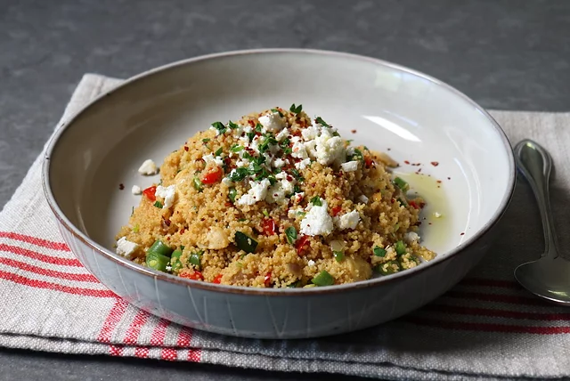

lasagna

about the recipe
Fluffy couscous pairs superbly with chicken.
ingredients
- (10 ounce) box couscous
- ¾ cup olive oil
- ¼ cup fresh lemon juice
- 2 tablespoons white balsamic vinegar
- ¼ cup chopped fresh rosemary leaves
- salt and ground black pepper to taste
- 2 large cooked skinless, boneless chicken breast halves, cut into bite-size pieces
- 1 cup chopped English cucumber
- ½ cup chopped sun-dried tomatoes
- ½ cup chopped pitted kalamata olives
- ½ cup crumbled feta cheese
- ⅓ cup chopped fresh Italian parsley
- salt and ground black pepper to taste
steps
- Place chicken stock in a saucepan and bring to a boil over medium-high heat.3
Stir in couscous. Remove pan from the heat; cover, and let stand for 5 minutes.
Fluff couscous with a fork. Cool for 10 minutes.
- Meanwhile, make the dressing by combining the olive oil,
lemon juice, and vinegar in the bowl of a blender or food
processor; mix on low until mixture thickens. Stir
in rosemary. Season to taste with salt and pepper.
- Combine the chicken, cucumber, sun-dried tomatoes,
and olives in a large bowl. Stir in the couscous, Feta cheese,
and parsley. Season to taste with salt and pepper. Toss the salad with half the dressing.
Taste, and add more dressing as desired, or, if making the salad in advance, add additional
dressing just before serving.